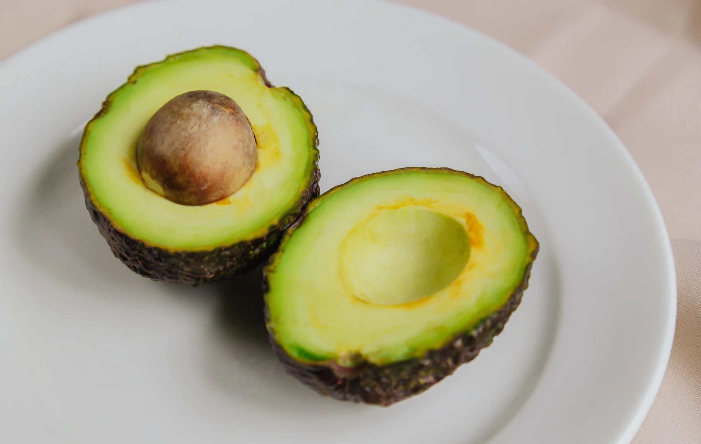
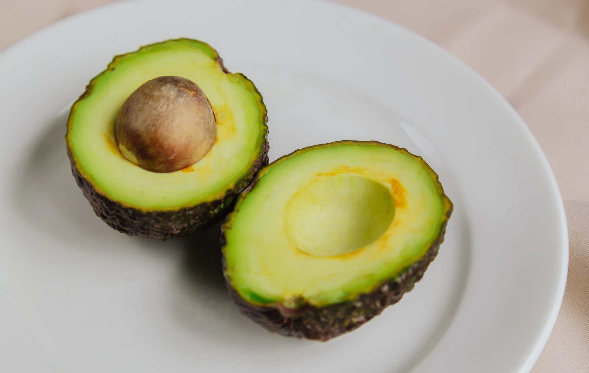
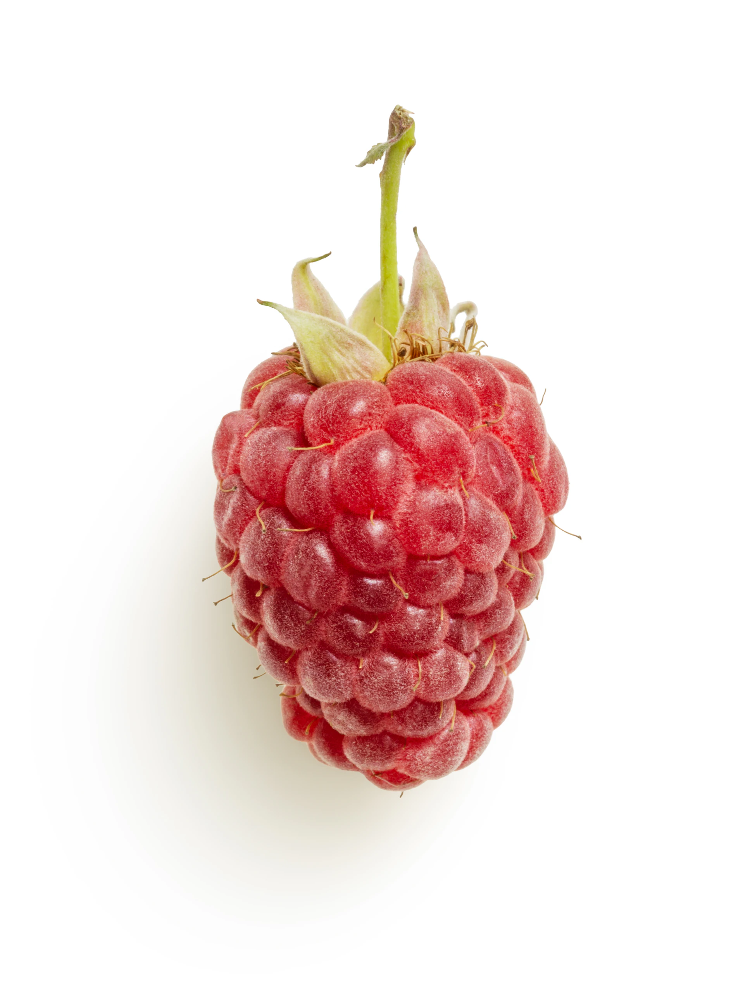
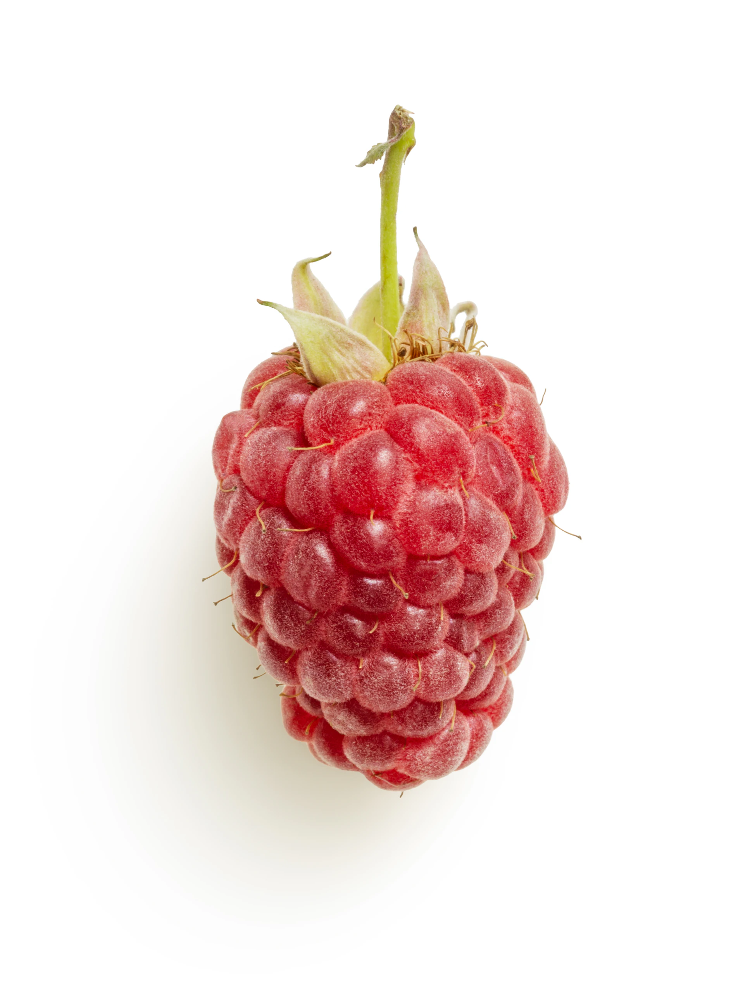
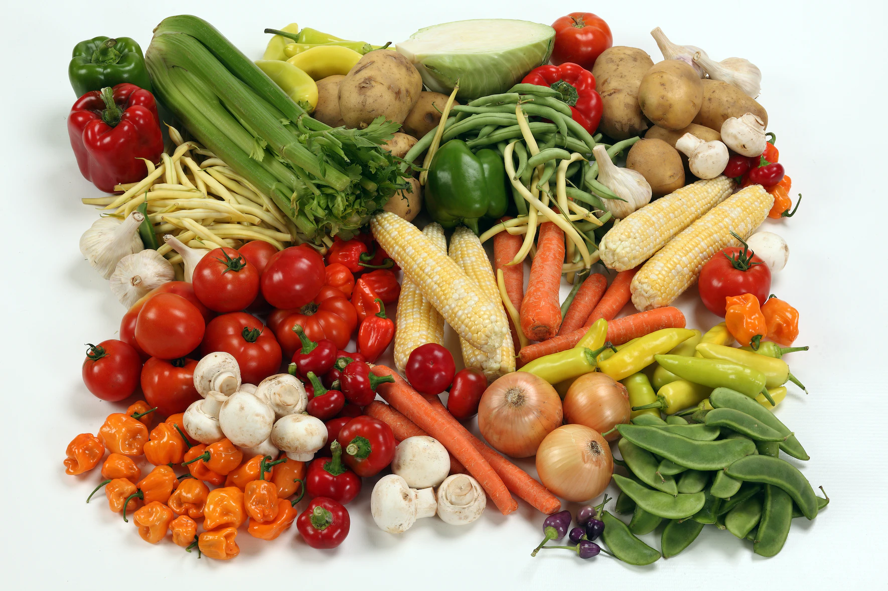
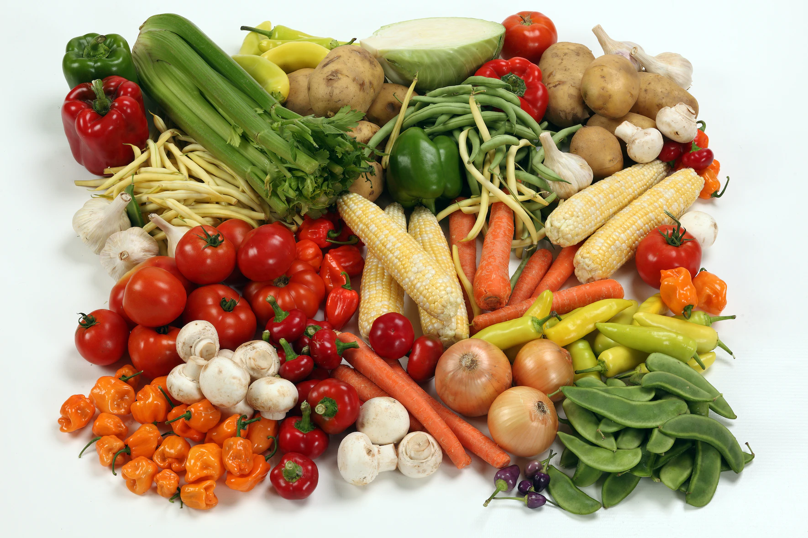

Classes of food
Protein
this include all foods made from seafood; meat, poultry, eggs; beans, peas, lentils; and nuts, seeds, soy products. Proteins are made up of building blocks called amino acids. There are about 20 different amino acids that link together in different combinations.Vitamins are organic molecules (or a set of closely related molecules called vitamers) that are essential to an organism in small quantities for proper metabolic function. Essential nutrients cannot be synthesized in the organism in sufficient quantities for survival, and therefore must be obtained through the diet. For example, Vitamin C can be synthesized by some species but not by others; it is not considered a vitamin in the first instance but is in the second. Most vitamins are not single molecules, but groups of related molecules called vitamers. For example, there are eight vitamers of vitamin E: four tocopherols and four tocotrienols.
- beans
- meat
- fish
- soy
- eggs

 

Vitamin
Vitamins and minerals are essential for maintaining a healthy body and preventing diseases. They can be found in a variety of foods, including fruits, vegetables, whole grains, beans and legumes, low-fat protein, and dairy products.Vitamins are organic molecules (or a set of closely related molecules called vitamers) that are essential to an organism in small quantities for proper metabolic function. Essential nutrients cannot be synthesized in the organism in sufficient quantities for survival, and therefore must be obtained through the diet. For example, Vitamin C can be synthesized by some species but not by others; it is not considered a vitamin in the first instance but is in the second. Most vitamins are not single molecules, but groups of related molecules called vitamers. For example, there are eight vitamers of vitamin E: four tocopherols and four tocotrienols.

 

- beef
- grains
- avocado
- mushroom
- fish
Minerals
They Minerals are inorganic substances that are essential for the human body to function properly.They are required in varying amounts and can be found in many foods. Some of the most common minerals include calcium, iron, magnesium, potassium, and zinc.Vitamins are organic molecules (or a set of closely related molecules called vitamers) that are essential to an organism in small quantities for proper metabolic function. Essential nutrients cannot be synthesized in the organism in sufficient quantities for survival, and therefore must be obtained through the diet. For example, Vitamin C can be synthesized by some species but not by others; it is not considered a vitamin in the first instance but is in the second. Most vitamins are not single molecules, but groups of related molecules called vitamers. For example, there are eight vitamers of vitamin E: four tocopherols and four tocotrienols.

 

- cocoa
- Adding cocoa to smoothies, munching on a piece of dark chocolate, or sprinkling your yogurt with cacao nibs are satisfying ways to increase your mineral intake.
- eggs
- Eggs are often referred to as natures multivitamin and for good reason. Whole eggs are rich in nutrients and provide many important minerals.
- beans
- Beans are known for being packed with fiber and protein, but they also happen to be an abundant source of minerals, including calcium, magnesium, iron, phosphorus, potassium, manganese, copper, and zinc
- meats
- Although not as popular as protein sources like chicken and steak, organ meats are amongst the most mineral-dense foods you can eat.
- avocado
- Avocados are creamy fruits packed with healthy fats, fiber, vitamins, and minerals. They are especially rich in magnesium, potassium, manganese, and copper